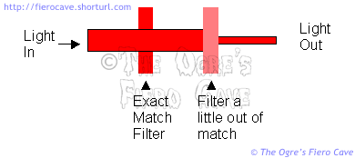
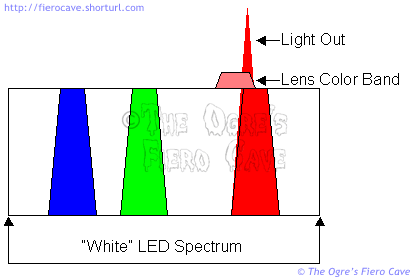
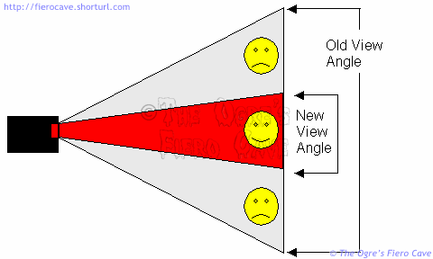

Go Home
Site Map
Go Home
Site Map
Sinking The LED Balloon
LEDs are better than normal bulbs.
Not really. LED is faster then normal bulb but...
- While LED can save power can cause other problems, like needing Ballast resisters.
- Many have problem because of quality... Poor design, Poorly made, or both. As a result Many products won't last long from the start.
- Car voltage and current are not very stable. Worse, Cars sees power surges from turning on/off various motors and relays. Normal Bulbs are more resistance to power surges. Many LED products does not use surge protection.
- Some circuits need the correct resistance from a normal bulb, like the alternator/battery warning light.
- Brightness...
LED dimmer then OE bulb then is a big safety problem. Example, Dim Brake lights are bad.
LED brighter then OE bulb can cause Glare problems to others drivers.
Avoid any vendor that does not publish correct light output data. Many will be too dim, others too bright.
Comparing LED brightness to a normal bulb see lightbulbs.
Many LEDs use heatsink to cool off the LED. Without enough air volume inside the fixture to remove the heat, your LED may have a very short life. This can be a problem for LEDs in Fiero side marker lights. (Heat from a 194 bulb can burn the marker's back section and cause the plastic be very brittle and break.)
But Ogre, Relays uses Diode to kill surges.
Many relays and AC clutch coil do but the diode can die and the relay or AC coil will work. Others not, including Horns and most motors. Every time you kill power to a coil without a Diode or other protection then they dump a power surge to the car. Famous example: Motor surges is why Fiero's Power Window switches die over time. Burning PW switches is obvious but the whole car can get the surge too. Surges over 700 volts are common. LED lamps without protect can die much sooner that advertise life span.
Ballast/Load Resistors
In most cases, Fiero and Many old cars Should Not need Ballast Resistors but do need to change both Flashers to electronic units. Ballast Resistors are used on car that have warning light or set a DTC (error code) in the BCM when a bulb is blown.
Try...
- Tridon EL12 Standard noise
- Tridon LF12 Loud noise (Yes, they are Loud. Think UPS trunk.)
- Blazer FL32
Many think by switching to LED will save power but ballast resistors can cut power saving by allot. When you use ballast resistors, the resistors use power too. Most cases you need 2 to several resistors and can eat 25-40 Watts each. A 6Ω resistor eats ~35w at 14v vs. 2057 7w tail/27w brake. That's why Many venders sell 50w resistors for brake lights and turn signals. Many newer cars need ballast resistors even for small bulbs/LED switch or the BCM will barf. This is why you now see "Canbus Error Free" LED lamps. Example, a 194 equivalent LED has its own ballast resistor. BCM that "sees" a bad bulb can turning on a warning light, setting DTC, even disable the cruise control.
Warning: Aluminum housing power resistors are Watt Rated using a heatsink. Without a heatsink the aluminum resistor can cause problems.
Most venders sell 6Ω 50 watts Aluminum resistors that eat ~35w at 14v. Many without heatsink are rated 1/2 or less watts. Example: Tyco Electronics Type THS Series. THS50 50 watts with a heatsink but 20 watts w/o a heatsink.
If you don't want a heatsink or keep the heatsink very small then Look in the product specs for Watts without Heatsink. In all cases you need to bolt/screw them to any metal because of heat generated. Mount to car's frame is best and use heatsink grease so the frame can be your heatsink.
Using LED to replace incandescent lightbulb on the interior of car
LED does not dim well for instrument panel compared to normal lightbulbs. I've tried LEDs in the dash and went back to normal 194. The main problem is LEDs have much less range of dimming with OE dimmer circuit.
A brighter dash or a dash that is hard to dim causes other problems. A bright dash plus driving at night can prevent you from seeing the road. Called Light Pollution and is a real problem. This issue can happen in the city but glare from the dash can blind you from seeing the road outside of the city. You want the dash to be able to dim as possible to see outside of the car at night.
Many are replacing 194 bulbs with brighter bulbs or LEDs because the factory setup is always dim. 194 bulbs in the dash are very bright but you may have dimmer and other problems. Before you replace anything see Dash Lamps & Dimmer page.
Light Color
Color light from any source can have problem too... Similar to Color Matching below, Gauges etc can have odd results when used in/under nonfactory light color. Make sure you can easy remove whatever if/when color light doesn't work.
The bad news about exterior LED use in older cars
Allot of people are putting LEDs into the taillights of Fiero and other older cars thinking they are doing a good thing. The reality is they are often doing a very bad thing. Bad to the point their lives are in danger and they don't even know it.
Many of the LED products available are not as bright as the OE lighting to start. (The honest vendors even tell you this.) When installed in many cars the lenses block the LED output and make them dimmer still. Worse LED units may decrease the angle thru which the lights can be easily seen. Yes LED units turn on far faster than Incandescent lamps but if they can't be seen that speed doesn't matter. This is why many of these products are sold as Show/Off-road use items or have warnings that they may not meet DOT requirements.
I'm covering taillights here but the same information applies to side marker and front lighting. I worry allot more about taillights because of the growing propensity of people to tailgate and change lanes with tight clearance. We'll also completely ignore the poor quality of many products.
You say LEDs suck?
No. LED has some very nice properties like long life, low current and rapid turn on. The problem is LED lighting, as a drop in item for older cars, frequently doesn't perform properly. It also doesn't meet FMVSS 571.108 and can turn a car into a ticket magnet due to defective or illegal lighting.
Many LED vendors will sell anything and often don't care if products are legal or not.
You can run dim or illegal lights for years then you drive thru another town or state and suddenly lighting issues makes you a big target. You often give Police a valid reason to stop you just for having defective/dead lights, let alone for having illegal lighting. This is not a new issue either. Police could stop you for this in decades past. Once stopped, Cops can go fishing to see if anything else is wrong to ticket or arrest you.
Many LED sets and other lights (Like H4 Headlight Housings and Bulbs) will fail FMVSS tests and are not "street legal." "Check your local ordinances for legality." is a clue the product is likely Not Street Legal in many States. Many other vendors/sites say "off road use only" on packages or nothing at all for selling iffy lights. Use off road or show use only on the road, get into a wreck, and try to sue the company then company can say, We told them "off road use only..."
Example: "Switchback" LED
"Switchback" LED is a current fad and many will buy. Bright ones are big glare problem on most cars. Most Cheap ones won't last long. They seems to be an aftermarket attempt trying to add DRL/fog/driving lights w/o added extra housing and electronics and many cases is a major fail. May look OK in a driveway but can cause problems on the road.
Ignoring any possible electrical issues... Is that legal in your state? Other states you drive in?
Some Examples/Highlight:
- Normal 1157 2057 2357 etc. Park light are dimmer then turn light because of FMVSS. Bright light for park light = a "defect" park light circuit in many states. Or Police can think that Fog/Driving lights are on and have dead parking lights.
- Does make glare problems use as Fog, Driving or DRL.
- Parking/Turn housing and lens are not made as fog/driving lights on any car. Park/turn lenses are made as flood light.
- Color of lenses doesn't matter. Clear lens for Parking/Turn use Amber bulbs.
- "Switchback" lights are often too bright/dim as DRL.
- Many OE Park/Turn lights has amber lenses. Amber is for Fog lights and maybe DRL but not driving lights.
- Fog and Driving lights are made to do their job.
- Many states, Fog/Driving lights need their own housing and separated enough from park/turn light to not confuse or hide turn bulb for other drivers.
- Many states, Fog/Driving lights allowed only when Low Beam HL is on. Some states allow Fog lights only when driving in Fog and Low beam HL is on.
- Need proper focus for Fog and Driving lights. Fog lights have different focus and aiming requirements than driving lights. Many states have rules on how Fog or Driving lights are aimed.
Note that Many OEM DRL turn off when Turn lights are active for same reason. Most will turn off DRL when Headlights are on. Why? Many OEM DRL have glare problems using at night and for FMVSS compliance as well.
Why does USDOT/FMVSS matter at state level or to old cars?
All exterior vehicle lighting is Federally Regulated thru FMVSS 571.108 and many State's use FMVSS to base local laws or even copy them. Example: PA lighting code is a mainly verbatim copy of 108. What passes locally could be a ticket magnet in another city county or state you drive thru later.
They look bright enough to me
Do they? How are you checking that? Do you have the sun in your face like many drivers behind you will at various times of year? Is the sun shining on your lights? Are you standing directly behind the car or off to the side like people you are changing lanes in front of? Are you 8-10 feet in the air like many truck and bus drivers are? Is the light causing glare problems to other Drivers at night? Unlike the majority of people that think most LED solutions are safe, FMVSS take all these things into account.
Drawings
Now obviously my drawings have sharp lines and real lighting often doesn't. To say these drawings are greatly simplified would be an understatement. That said... When you are dealing with "synthetic" light sources like LED the drop off in output can be quite dramatic compared to traditional incandescent sources. Attenuation will happen in far narrower bands of light and often the angle of projection will be far tighter as well. The two things combined are potentially very bad for your rear bumper.
Color Match
Red or any color LED other than white makes a very narrow band of light. Any lenses/filters that you want the light to pass thru must be exactly or extremely close to the correct color or the output will drop very rapidly. It is much the same as tuning a radio channel. If you listen to WILM (1450 AM) at 1450 on the dial it comes in loud and clear. Move to 1451 and you hear it but not as well. 1452 even worse and at 1455 you probably won't hear it at all. The lenses and LED may look red but if they are not generating and passing exactly the same shades of red then the lenses will be blocking quite a bit of the LED output.

White LED solves this problem
Watch Color Temperature. White LEDs 4500°K or more can cause problem, like Red lenses often look pink/purple. Odd colors can make you stand out, often in bad ways. Normal bulbs are around 2700‐3000°K.
Not necessarily. "White" LED could actually perform worse in some cases.
White LED is like any other white light. In theory a white light has ALL the colors are present. The filter/lens like a taillight housing blocks all colors other than the one it is tuned to. With a true white LED you eliminate the color match problem. At least that would be the idea.
The problem... "White" LED usually isn't true white. Exactly what light you get from a "white" LED varies by which type it is and who made it. One of the common ones actually uses a UV LED to blast a blend of phosphors that in turn generate the light you see. They work much like a fluorescent tube in your home. The exact output of those depends greatly on the phosphor blend and just like florescent tubes you have white LEDs that are weak in some parts of the spectrum.
Any "white" LED is likely missing some colors and for this reason some white LED product may not work any better with some lens/filter shades than the "wrong" single color LED. If your "white" LED is producing light from Red Green and Blue it may not give you much if any light at all when used with a yellow filter. A correctly matched Yellow LED could and likely would give better performance that the white one. If the red part of the "white" light is not a good match for your red lens, you get the same problem as using a poorly matched Red LED.
Testing
It isn't terribly difficult to test the output of the LEDs vs. incandescent in a given fixture. The most basic test needs a light meter and a box to fitted block other light sources and control meter position. (You want the meter in the same spot for each test.) See what the meter reads with the OE lamp and then with the LED. I'd be very surprised if the best drops in LEDs aren't quite a bit dimmer on most cars. This ignores the fact that the folks that make some of these products say right up front the things are dimmer than standard lamps even without lenses blocking them.
Do keep in mind that depending on the color of light, some light meters may not work well. This is because light meters are sometimes tuned to certain parts of the spectrum critical for specific uses. Example, many photography meters flip out under stage lighting because they see one color better than another. If the stage is bright blue, the light meter may still say it is really dark because it doesn't see enough red. If you have trouble getting a good read, it could be your meter just doesn't like the lights you are working with.
Viewing Angle
Note: Viewing angles are covered in FMVSS 108 but buried in SAE publications. Worse SAE document always reference to other SAE documents and is very hard to decipher them. This section takes a quick review of viewing angles.
All this and I haven't even gone into issues like Viewing Angle that can be a big factor for turn signals or when large trucks are following small cars. As viewing angle drops, other vehicles must be farther and farther behind you to effectively see your lights. Drivers in adjacent lanes may not see your turn signals at all unless they are many yards behind you. A driver on you left will have to be even farther back than one on the right due to the fact the driver is on the left side of the car and farther from your lights.
Viewing angle isn't as simple as the base viewing angle of the LEDs due to LED placement in the assembly and diffusion in many lens plastics. Depending on the LED setup and the amount of diffusion in the lens the viewing angles could be frighteningly small or considerably larger than the base output from the LEDs. This becomes a big issue for turn signals and when large vehicles follow small cars. People that are stuck in your old viewing angle won't see you easily if at all when you are changing lanes or stopping.
The simple drawing below illustrates the problem and isn't to any particular scale. Keep in mind that you have to check for both horizontal and vertical viewing angle. Horizontal will affect nearly all vehicles behind you. Vertical comes into play when large trucks and buses are behind you. Many truck and bus configurations can put the driver very high in the air behind you, up to several times the distance your lights are from the ground.
For
a basic check... You can test viewing angles just by walking across the rear of
the car 30-40 feet out. If you see a really obvious sweet spot directly behind
the car you likely have problems.